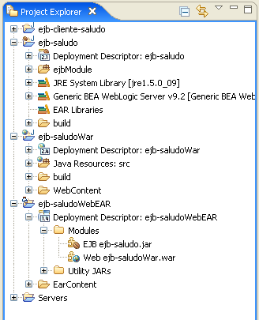

Sesión 2 de ejercicios EJB - Beans de sesión sin estado
En los ejercicios de esta sesión vamos a detallar todos los pasos necesarios para implementar el bean Saludo que hemos probado en la sesión anterior.
Vamos a continuar usando el entorno Eclipse WebTools, aunque a partir de la próxima sesión usaremos el entorno de programación BEA Workshop.
Pasos a seguir:
- Crear una clase de prueba JUnit en el proyecto de la sesión anterior ejb-cliente-saludo para probar el enterprise bean de forma remota.
- Eliminar el bean desplegado en la sesión anterior.
- Crear el bean Saludo.
- Desplegar el bean Saludo y comprobar el cliente y las pruebas de JUnit.
- Crear la aplicación web ejb-saludoWar, el fichero EAR con el EJB y desplegar todo en el servidor de aplicaciones.
Proyecto cliente
Continua trabajando con el proyecto que creaste en la sesión anterior y con el enterprise bean desplegado en el servidor de aplicaciones en funcionamiento:
Ejecuta el programa ClienteSaludo para comprobar que el bean está desplegado y activo. Vamos ahora a crear la prueba JUnit que compruebe el funcionamiento remoto del bean (cuando lo volvamos a desplegar).
- Crea un nuevo paquete es.ua.jtech.ejb.tests. Pulsa el botón derecho sobre él y crea un nuevo "JUnit Test Case". Pulsa en el enlace inferior del diálogo que aparece para incorporar la librería de JUnit al build path.
- Escribe como nombre de la clase de prueba TestSaludo. Escribe el siguiente código (copia y pega). En él se definen tres pruebas que se ejecutan secuencialmente. La primera crea el acceso al bean (objeto que implementa la interfaz Saludo) y se guarda en la variable estática saludo. La segunda prueba el método saluda() y la tercera el método getSaludo(int numDatos):
TestSaludo.java:
package es.ua.jtech.ejb.tests;
import java.io.IOException;
import java.util.Properties;
import javax.naming.Context;
import javax.naming.InitialContext;
import javax.rmi.PortableRemoteObject;
import es.ua.jtech.ejb.beans.Saludo;
import es.ua.jtech.ejb.beans.SaludoHome;
import es.ua.jtech.ejb.beans.SaludoTO;
import junit.framework.TestCase;
public class TestSaludo extends TestCase {
private static Saludo saludo;
public TestSaludo(String nombre) {
super(nombre);
}
public void testCreateSaludo() {
try {
Context jndiContext = getInitialContext();
Object obj = jndiContext.lookup("SaludoBean");
SaludoHome home = (SaludoHome) narrow(obj, SaludoHome.class);
obj = home.create();
saludo = (Saludo) narrow(obj, Saludo.class);
} catch (Exception e) {
fail("Fallo en la creación");
}
}
public void testSaluda() {
try {
String saludoStr = saludo.saluda();
assertTrue(saludoStr.equals("Hola, que tal?")
|| saludoStr.equals("Cuanto tiempo sin verte")
|| saludoStr.equals("Que te cuentas?")
|| saludoStr.equals("Me alegro de volver a verte"));
} catch (Exception e) {
fail("Fallo en la comunicación con el bean");
}
}
public void testGetSaludo() {
try {
SaludoTO saludoTO = saludo.getSaludo(100);
assertTrue(saludoTO.getDatos().size() == 100);
} catch (Exception e) {
fail("Fallo en la comunicación con el bean");
}
}
private static Context getInitialContext()
throws javax.naming.NamingException, IOException {
Properties p = new Properties();
p.put(Context.INITIAL_CONTEXT_FACTORY,
"weblogic.jndi.WLInitialContextFactory");
p.put(Context.PROVIDER_URL, "t3://localhost:7001");
return new InitialContext(p);
}
private static Object narrow(Object obj, Class clase) {
return PortableRemoteObject.narrow(obj, clase);
}
}
- Ejecuta el test con el botón derecho sobre el fichero TestSaludo.java y seleccionando la opción "Run As > JUnit Test". Todas las pruebas deben funcionar correctamente. En la siguiente figura se muestra el aspecto de la vista de JUnit, después de haberla colocado en el panel inferior derecho.:
Eliminar el bean Saludo del servidor de aplicaciones
Usar la consola de administración para eliminar del servidor de aplicaciones el bean ejb-saludo. Para ello:
- Pincha en el botón "Lock & Edit" (panel superior izquierdo)
- Activa la casilla del bean ejb-saludo. Despliega el menú "Stop" y selecciona la opción "Force Stop Now". Confirma.
- Ahora que el bean se encuentra en estado "Prepared" ya podemos eliminarlo. Vuelve a activar su casilla y pulsa ahora "Delete". Confirma.
- Pulsa en "Activate Changes" (en verde). El bean ha sido eliminado.
Para el servidor de aplicaciones, utilizando el menú "Inicio" de Windows.
Lanza de nuevo las pruebas JUnit. Verás que las tres pruebas definidas fallan (las dos últimas necesitan que la primera haya obtenido correctamente el bean).
Nuestro objetivo en lo que falta de sesión de ejercicios es MAKE IT GREEN!
Instalación del Runtime BEA Weblogic
1. Selecciona la opción "Window > Preferences... > Server > Installed Runtimes" y pulsa "Add...". Selecciona "BEA Systems, Inc. > Generic BEA Weblogic v9.2". Acepta el siguiente diálogo.
Creación y despliegue del bean Saludo
Vamos ahora a crear paso a paso el enterprise bean SaludoBean.
1. Crea un proyecto con el asistente "EJB > EJB Project" con el nombre de "ejb-saludo". Acepta los diálogos del asistente. Abre la perspectiva "J2EE" tal y como te sugiere el asistente.
2. En la pestaña de "Servers" añade el servidor BEA Weblogic del dominio "ejb" que creaste en la sesión pasada:
- Botón derecho > "New > Server".
- En la siguiente pantalla escoge "Next>" para introducir el path en donde está el dominio "ejb" ("C:\bea\user_projects\domains\ejb"), los path de los comandos de arranque y parada del servidor y el usuario y contraseña para administrarlo (ver figura). Pulsa "Finish".
El servidor aparecerá en estado "Stopped". El aspecto de Eclipse debe ser el siguiente:
3. Crea el paquete es.ua.jtech.ejb.beans en el paquete ejb-saludo y crea en él los ficheros (cópialos de los apuntes):
- Saludo.java
- SaludoHome.java
- SaludoBean.java
- SaludoTO.java
4. Modifica en el directorio "src/META-INF" el fichero ejb-jar.xml y crea el fichero weblogic-ejb-jar.xml con el siguiente contenido.
ejb-jar.xml:
<?xml version="1.0" encoding="UTF-8"?>
<ejb-jar id="ejb-jar_ID" version="2.1"
xmlns="http://java.sun.com/xml/ns/j2ee"
xmlns:xsi="http://www.w3.org/2001/XMLSchema-instance"
xsi:schemaLocation="http://java.sun.com/xml/ns/j2ee
http://java.sun.com/xml/ns/j2ee/ejb-jar_2_1.xsd">
<enterprise-beans>
<session>
<ejb-name>SaludoBean</ejb-name>
<home>es.ua.jtech.ejb.beans.SaludoHome</home>
<remote>es.ua.jtech.ejb.beans.Saludo</remote>
<ejb-class>es.ua.jtech.ejb.beans.SaludoBean</ejb-class>
<session-type>Stateless</session-type>
<transaction-type>Container</transaction-type>
</session>
</enterprise-beans>
</ejb-jar>
weblogic-ejb-jar.xml:
<?xml version="1.0" encoding="UTF-8"?>
<weblogic-ejb-jar xmlns="http://www.bea.com/ns/weblogic/90"
xmlns:xsi="http://www.w3.org/2001/XMLSchema-instance"
xsi:schemaLocation="http://www.bea.com/ns/weblogic/90
http://www.bea.com/ns/weblogic/90/weblogic-ejb-jar.xsd">
<weblogic-enterprise-bean>
<ejb-name>SaludoBean</ejb-name>
<jndi-name>SaludoBean</jndi-name>
</weblogic-enterprise-bean>
</weblogic-ejb-jar>
La configuración del proyecto debe quedar como la siguiente figura:
5. Asegurate de que el servidor de aplicaciones está parado y que no hay ninguna instancia funcionando fuera de Eclipse, conectándote a la consola de administración. Deberá aparecer el mensaje de error del navegador "Imposible realizar la conexión". Pon en marcha el servidor de aplicaciones pulsando el botón verde con el símbolo de "play" o pulsando el botón derecho sobre el servidor y seleccionando "Start".
6. Despliega el bean en el servidor de aplicaciones. Para ello, pulsa con el botón derecho en el servidor (panel inferior) y escoge la opción "Add and Remove Projects...". Selecciona el proyecto ejb-saludo y pulsa "Finish" para desplegarlo en el servidor:
6. Si consultas en la consola de administración verás que el bean se ha desplegado correctamente y está en estado activo.
7. Prueba ahora a ejecutar los tests de JUnit y todos deben funcionar correctamente.
8. Ahora puedes modificar el bean, cambiando la implementación de alguno de los métodos en el fichero SaludoBean.java. Por ejemplo, haz que el bean devuelva tu nombre junto al saludo, modificando el método saluda() de la siguiente forma:
public String saluda() {
int random = (int) (Math.random() * saludos.length);
return "Pepito dice: " + saludos[random];
}
9. Salva el fichero y verás que el estado del servidor cambia a "Republish". Pulsa en el botón derecho y selecciona "Publish". Verás como el bean se redespliega en el servidor. Ejecuta el programa ClienteSaludo.java y comprueba que el mensaje que devuelve el bean ha cambiado.
(*) Creación y despliegue de la aplicación Web ejb-saludoWar
Vamos a terminar creando y desplegando la aplicación Web que accede al bean de forma local.
1. Elimina el bean del servidor de aplicaciones, seleccionando la opción "Add and Remove Projects..." y eliminando el proyecto "ejb-saludo". Verás que automáticamente se lanza una tarea de ant que realiza el undeploy del bean. Comprueba en la consola de administración que el bean ya no está desplegado.
2. Modifica los ficheros descriptores de despliegue añadiendo las siguientes líneas (marcadas con una flecha):
ejb-jar.xml:
...
<remote>es.ua.jtech.ejb.beans.Saludo</remote>
---> <local-home>es.ua.jtech.ejb.beans.SaludoLocalHome</local-home>
---> <local>es.ua.jtech.ejb.beans.SaludoLocal</local>
<ejb-class>es.ua.jtech.ejb.beans.SaludoBean</ejb-class>
...
weblogic-ejb-jar.xml:
...
<weblogic-enterprise-bean>
<ejb-name>SaludoBean</ejb-name>
<jndi-name>SaludoBean</jndi-name>
---> <local-jndi-name>SaludoBeanLocal</local-jndi-name>
</weblogic-enterprise-bean>
...
Verás que aparecen errores en el proyecto. Eclipse detecta que las clases declaradas en el descriptor de despliegue no han sido definidas.

2. Añade en el paquete del bean ejb-saludo (paquete es.ua.jtech.ejb.beans) las interfaces que facilitan el acceso local al bean (cópialas de los apuntes):
- SaludoLocal.java
- SaludoLocalHome.java
Verás que han desaparecido los errores en el proyecto. De esta forma has añadido las interfaces locales al bean, para que se pueda acceder desde la aplicación web.
3. Crea un nuevo proyecto ejb-saludoWar del tipo "Dynamic Web Project". Crea el paquete es.ua.jtech.ejb.delegates y en ese paquete, crea la siguiente clase Java:
SaludoBean.java
package es.ua.jtech.ejb.delegates;
import java.io.IOException;
import java.util.Date;
import java.util.List;
import java.util.Properties;
import javax.naming.Context;
import javax.naming.InitialContext;
import es.ua.jtech.ejb.beans.SaludoTO;
import es.ua.jtech.ejb.beans.SaludoLocal;
import es.ua.jtech.ejb.beans.SaludoLocalHome;
public class SaludoBean {
private String mensaje;
private Date fecha;
private List<Integer> datos;
public SaludoBean() {
try {
Context jndiContext = getInitialContext();
SaludoLocalHome home = (SaludoLocalHome) jndiContext.lookup("SaludoBeanLocal");
SaludoLocal saludo = (SaludoLocal) home.create();
SaludoTO saludoTO = saludo.getSaludo(100000);
this.mensaje = saludoTO.getMensaje();
this.fecha = saludoTO.getFecha();
this.datos = saludoTO.getDatos();
} catch (Exception e) {
e.printStackTrace(); // [7]
}
}
public int getNumDatos() {
return datos.size();
}
public String getFecha() {
return fecha.toString();
}
public String getMensaje() {
return mensaje;
}
private Context getInitialContext() throws javax.naming.NamingException,
IOException {
Properties p = new Properties();
p.put(Context.INITIAL_CONTEXT_FACTORY,
"weblogic.jndi.WLInitialContextFactory");
p.put(Context.PROVIDER_URL, "t3://localhost:7001");
return new InitialContext(p);
}
}
Verás que se trata de un JavaBean que en su creación accede al enterprise bean de forma local, guardando los datos que éste devuelve en sus propiedades numDatos, fecha y mensaje.
4. Comprueba que han aparecido errores en el proyecto recién creado, porque las interfaces del enterprise bean no se encuentran en el build path del proyecto web. Vamos a arreglarlo poniendo el proyecto ejb-saludo en el build path del proyecto web. Para ello, pulsa el botón derecho en el proyecto web y selecciona "Build Path > Configure Build Path...". Selecciona la pestaña "Projects" y añade el proyecto ejb-saludo. Ya no debe aparecer ningún error.
5. Crea el fichero JSP que muestre por pantalla el resultado de la llamada al enterprise bean. Para eso crea el fichero index.jsp en el directorio WebContent con el siguiente contenido:
<%@ page language="java" contentType="text/html; charset=ISO-8859-1"
pageEncoding="ISO-8859-1"%>
<!DOCTYPE html PUBLIC "-//W3C//DTD HTML 4.01 Transitional//EN"
"http://www.w3.org/TR/html4/loose.dtd">
<html>
<head>
<meta http-equiv="Content-Type" content="text/html; charset=ISO-8859-1">
<title>Saludo</title>
</head>
<body>
<jsp:useBean id="saludo" scope="request"
class="es.ua.jtech.ejb.delegates.SaludoBean">
</jsp:useBean>
<h2>Saludo</h2>
<ul>
<li>Mensaje: <%= saludo.getMensaje()%></li>
<li>Fecha de creación: <%= saludo.getFecha() %></li>
<li>Número de datos: <%= saludo.getNumDatos() %></li>
</ul>
</body>
</html>
Fíjate que la página JSP crea un JavaBean delegates.SaludoBean de ámbito request. Esto significa que cada vez que se cargue la página, se va a llamar al procedimiento de creación del JavaBean, que a su vez llamará a la creación del enterprise bean. Después se muestran las propiedades del JavaBean, que se han obtenido en la llamada al enterprise bean.
6. Ya sólo queda desplegar conjuntamente el proyecto ejb y el proyecto web. Para ello vamos a integrarlos ambos en un EAR. Crea un nuevo proyecto "J2EE > Enterprise Application Project" con el nombre de ejb-saludoWebEAR que contenga los projectos ejb-saludo y ejb-saludoWar (ver figura)
Una vez creado el proyecto EAR, el explorador de proyectos debe tener el siguiente aspecto:

Despliega ahora el proyecto EAR, pulsando el botón derecho sobre el servidor de aplicaciones y escogiendo la opción "Add and Remove Projects...". Verás que el único proyecto que permite desplegar es el recién creado. Selecciónalo y pulsa "Publish" en el servidor.
7. Para comprobar que todo ha funcionado correctamente, accede al servidor con la consola de administración y comprueba que se ha desplegado el EAR.
8. Por último, accede a la URL http://localhost:7001/ejb-saludoWar para comprobar el funcionamiento de la página. También debes poder acceder al bean de forma remota con el cliente y las pruebas JUnit.
Para dejar el servidor de aplicaciones en un estado consistente y vacío para la siguiente sesión, elimina el EAR desplegado y páralo antes de cerrar Eclipse.